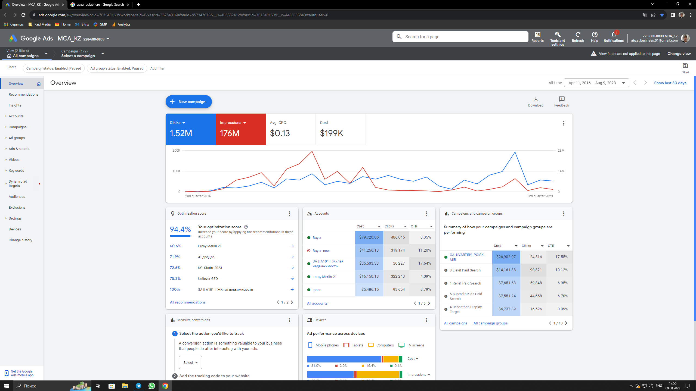
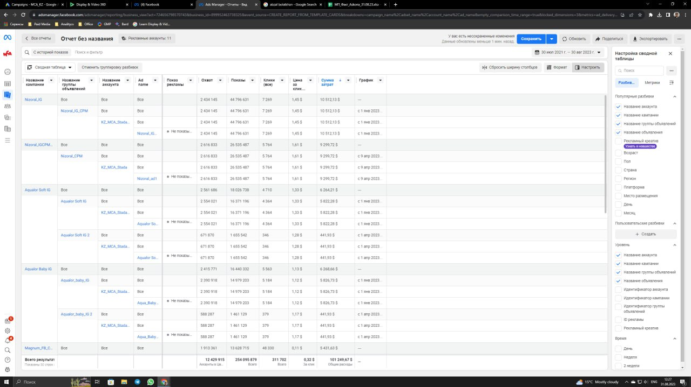
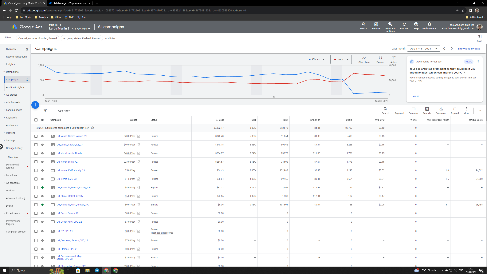
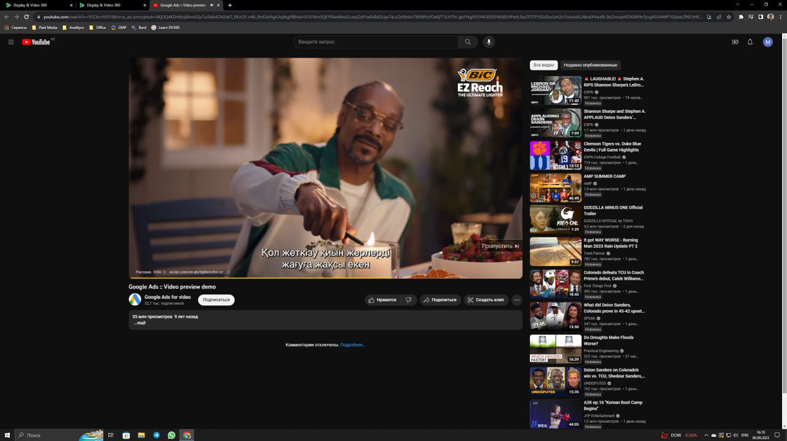
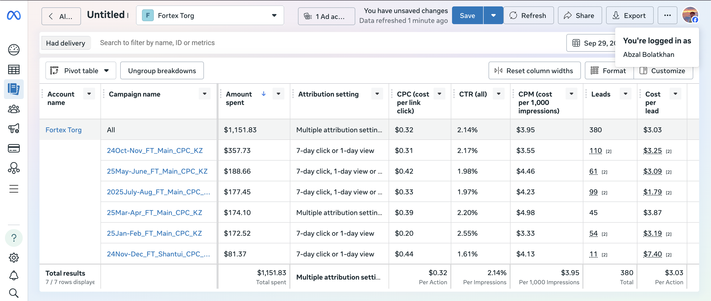
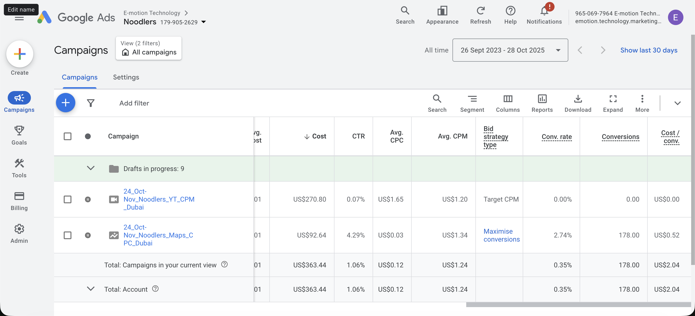
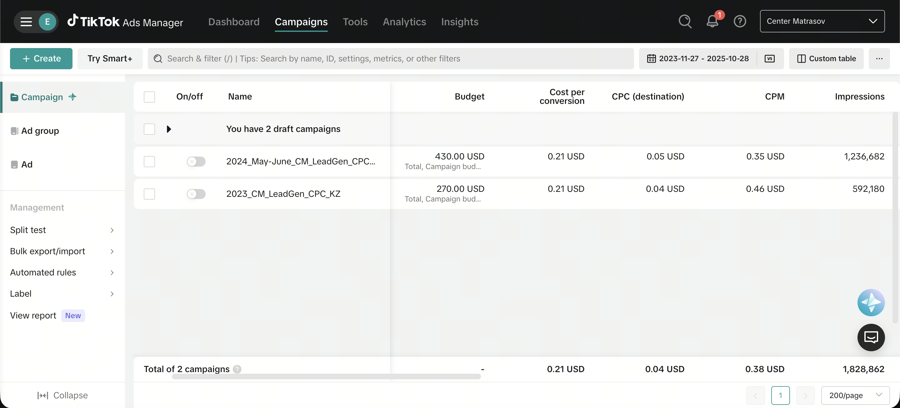
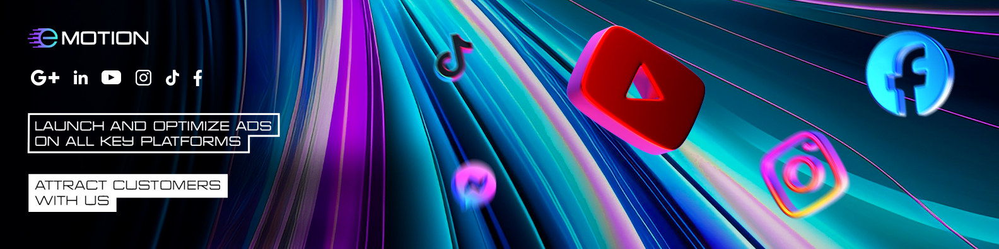

Факты
Что уже подтверждается моими материалами и опытом
Управлял paid media бюджетами $30,000+ в месяц
Вел кампании на рынках KZ, UAE и Turkey
Показывал 200%+ средний рост лидов / reach на ключевых проектах
Работал с Google Ads, Meta, TikTok, LinkedIn, DV360, GMP
Собираю outreach и delivery automation под реальные процессы
Умею связать рекламу, аналитику, воронку и операторские AI-сценарии
Обо мне
Подхожу к рекламе как к коммерческой системе, а не как к набору кабинетов.
В MCA Kazakhstan я вел e-commerce и крупные клиентские аккаунты, управлял рекламными бюджетами $30,000+ в месяц и участвовал в работе с брендами вроде BIC, Leroy Merlin и Askona. В E-motion Tech веду multi-channel кампании для B2B, B2C и D2C проектов.
Для рынка Казахстана это особенно важно: здесь часто проигрывают не из-за отсутствия бюджета, а из-за слабой аналитики, неясного оффера, неправильной структуры кампаний и плохой связки “реклама → посадочная → отдел продаж”.
Что я делаю
Где я даю результат для бизнеса в Казахстане
Лидогенерация
Настраиваю Google Ads, Meta и TikTok так, чтобы бизнес получал не просто трафик, а релевантные заявки по адекватной цене.
Снижение CPL
Ищу точки потерь в креативах, аналитике, посадочных и структуре кампаний, чтобы удешевлять лид без падения качества.
Аналитика и трекинг
GA4, GTM, ремаркетинг, аудит воронки, A/B тесты и понятные сигналы для решений, а не отчеты “для галочки”.
Outreach automation
Собираю пайплайны для поиска контактов, генерации сообщений, подготовки батчей и доставки в рабочие каналы команды.
AI-операторка
Автоматизирую повторяющиеся маркетинговые задачи: отправка материалов, рабочие сценарии, проверка гипотез, связка между инструментами.
Система, а не хаос
Собираю в единый контур рекламу, reporting, outreach, креативные задачи и прикладные AI-инструменты, чтобы команда двигалась быстрее.
Кейсы
Реальные материалы из портфолио
Оптимизация стоимости лида по кейсу из портфолио, 2023 Oct-Nov против 2024 May-June.
Снижение стоимости лида по Meta Ads на основе сохраненного кейс-материала.





Leroy Merlin
Google Ads и e-commerce performance для крупного retail-бренда.

BIC
YouTube / video performance в рамках крупного клиентского аккаунта.

Fortex
Meta Ads spend и performance-структура для проекта из E-motion Tech.

Center Matrasov
Google Ads для retail / D2C с акцентом на лиды и продажи.

TikTok Ads
Оптимизация CPM и работа с paid social в быстрорастущих кампаниях.

Noodlers
Google Ads по D2C-проекту из блока Emotion Projects.

Center Matrasov · TikTok
Paid social визуал и performance-эксперименты для retail-проекта.

Креативы и оффер
Не ограничиваюсь кабинетом: если ломается сообщение, визуал или подача, правлю и это тоже.
Для кого это
Если вы в Казахстане и вам нужен performance, а не “ведение ради ведения”.
Лучше всего я полезен для локальных услуг, e-commerce, education, medical, furniture, retail и B2B-проектов, где важны заявки, стоимость привлечения и нормальная прозрачность по цифрам.
Если реклама уже идет, но лиды дорогие, отдел продаж жалуется на качество, а собственник не понимает, что именно приносит деньги, это как раз та ситуация, где я могу быстро навести порядок.
AI Automation
AI использую не как украшение, а как прикладной ускоритель маркетинга и ops.
Я не продаю “магический AI”. Я собираю рабочие сценарии: outreach-воркфлоу, подготовка персонализированных сообщений, отправка файлов и материалов, полуавтоматические каналы доставки, агентные CLI-связки и быстрые внутренние инструменты под задачу команды.
По сути это operator-style подход: если задачу можно описать как повторяемый поток действий, я стараюсь превратить ее в систему, а не выполнять вручную бесконечно. Для Казахстанского рынка это особенно полезно там, где маркетинг маленький по команде, но большой по количеству ручной рутины.
Инструменты
Стек, с которым работаю
Google Ads
Meta Ads
TikTok Ads
LinkedIn Ads
GA4
GTM
DV360
GMP
Telegram automation
WhatsApp workflows
Agentic CLI
Remote ops
Remarketing
A/B testing
Media planning
Lead generation